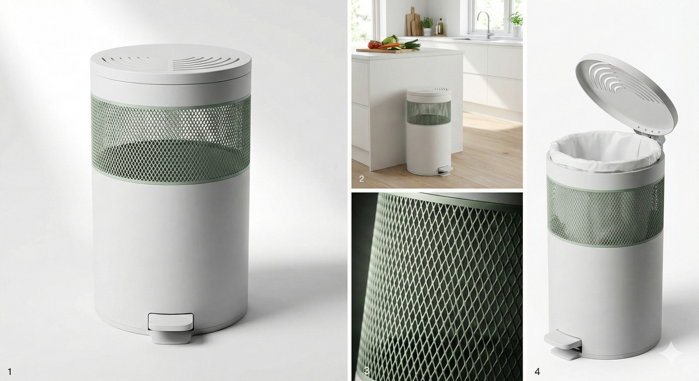
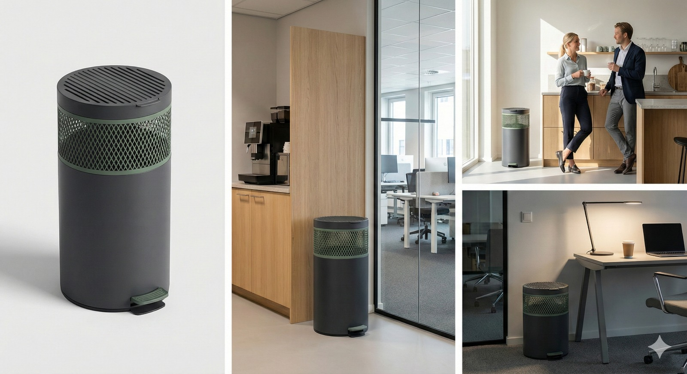
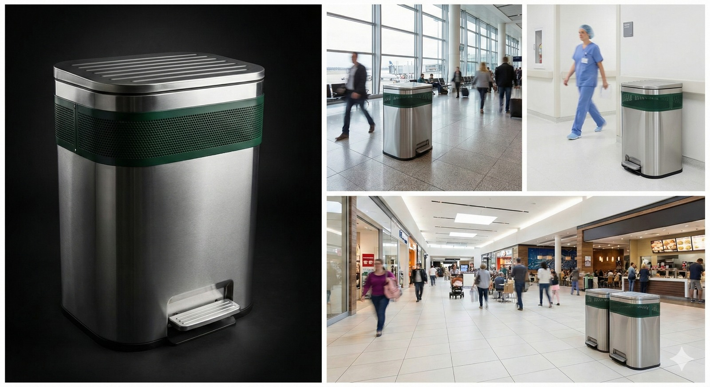
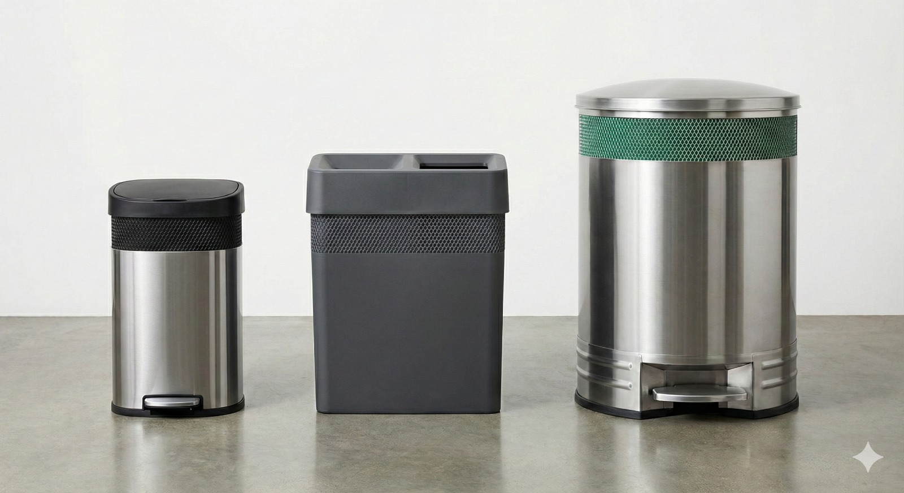

The patent-pending garbage can system that eliminates odors permanently. Engineered to eliminate, not mask.
Drop your email to get 40% off the Super Early Bird tier when we launch on Kickstarter.
In Germany, there is a daily practice called Lüften, or "house burping." Even in freezing winter, they open their windows to flush out trapped, humid air. Why? Because a sealed box traps moisture, which breeds bacteria, mold, and terrible odors.
So why are we doing the exact opposite to our garbage?
For decades, the industry has sold us sealed plastic cylinders. When you throw away food, that sealed can traps the moisture, creating a dark, 100% humidity greenhouse where anaerobic bacteria—the ones that smell like death—thrive.
Xstinkt is perpetual "house burping" for your garbage.
Traditional cans use chemical fragrances to mask the smell. Xstinkt uses pure physics to solve the root biological problem.
Our patent-pending dual-shell design creates an environment where odors and bacteria simply can't thrive. Not a filter. Not a fragrance. Prevention at the source.
The interior features a gasket-sealed drip basin that catches any bag leaks. Simple disassembly, pop the bottom off, quick rinse, done.
Because the inner and outer slots are intentionally misaligned, air flows freely, but your trash remains 100% hidden from view.
Designed to scale from households to the largest commercial venues.

For kitchens, garages, and laundry rooms
Compact, aesthetic, family-friendly. Fits seamlessly into your home while eliminating odors completely. No more taking the trash out early just because it smells.

For corporate spaces and break rooms
Professional appearance, zero maintenance headaches. Designed for shared spaces where odor complaints are common and cleaning budgets are tight.

For stadiums, malls, and airports
High-capacity, commercial-grade durability. Built for high-traffic venues where hygiene compliance matters and maintenance costs add up fast.
